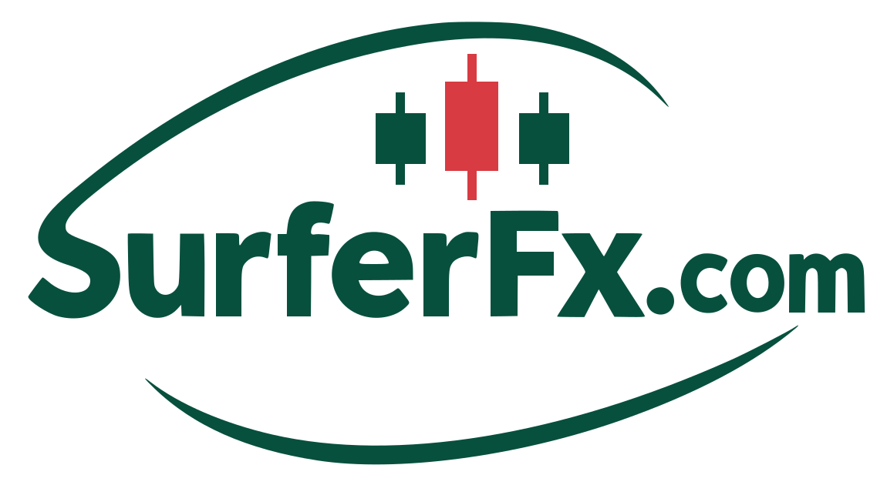

冲浪者量化网站视觉识别规范
适用于 SurferFX 中英文官网。访客从认识品牌、比较策略到发起咨询，始终可以通过相同的颜色与组件识别下一步操作。
标志与留白
页头图框宽 100–160 px，按屏幕宽度调整。图框外为文字留出 6–16 px；背景复杂时使用纯色承载区。浏览器标签页使用三根 K 线简标。
品牌色与用途
#07503D浅底主按钮、链接、导航选中态。
#0B202B首页首屏、全球网络、技术说明区和页脚。
#80DBB4深底主按钮、关键字、图形节点。
#E9F2ED内页导语、策略侧栏和咨询引导区。
#F8FAF8正文底色。卡片与输入框使用纯白。
#FF8184深底版品牌 K 线。浅底原标保留原红。
字体与阅读层级
内页主标题 32–52 px，章节标题约 26–38 px。首页保留两行大标题；中英文分别控制换行。
研究和策略正文 16 px、1.9 倍行高，行宽上限 72ch。卡片摘要约 15 px；元信息约 12–13 px。正文墨色 #182F32，次要文字 #526760。
西文优先 Helvetica Neue、Arial，中文优先苹方、微软雅黑。栏目编号用系统等宽字体，记录数据使用等宽数字；每个指标同时提供文字标签。
组件与交互
统一 6 px 圆角、细边框和 20–32 px 面板内边距。策略卡自上而下显示类别、名称、摘要、来源与入口。表单标签置于字段上方，手机输入字号 16 px。
键盘焦点显示外圈，深底用薄荷绿。筛选选中后同时改变填充与文字色。主要操作高度至少 44 px，表单字段至少 46 px。
页面与图形
用深海蓝承载线框海浪与全球网络。线条从青绿过渡至浅薄荷，关键节点用亮色；地图配有文字地区列表。
先用浅雾绿导语建立上下文，再进入卡片或分栏正文。咨询面板以深绿顶边定位入口；手机端按阅读顺序单列排列。
每篇研究指南使用独立的主题配图，首页、文章列表与详情页沿用同一封面。用于解释回撤的曲线标注为教学示例。文章以标题、正文、来源的顺序排版，保留可操作的来源链接。
表单与联系二维码分区，二维码置于白底。浅绿咨询带衔接深蓝页脚。手机页脚保留探索、平台、联系和法律入口。
容器最宽 1240 px。布局在 1100、850、620 px 逐步收拢；手机两侧留白 20 px。大区块垂直间距 56–96 px。